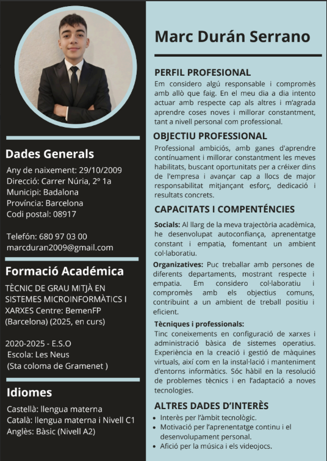

Currículum Vitae Professional
Educació i Formació
2025 - Actualitat
Estudiant de Cicle Formatiu
BemenFP, Barcelona
Aprenentatge pràctic enfocat en el disseny de bases de dades relacionals, configuració de sistemes operatius lliures i propietaris, muntatge de xarxes informàtiques de resolució local i maquetació web mitjançant llenguatges de marques.
2021 - 2025
Educació Secundària Obligatòria (ESO)
Institut d'Educació Secundària, Barcelona
Educació bàsica obligatòria finalitzada amb especial inclinació per la tecnologia i la informàtica elemental.
Habilitats Tècniques
Llenguatges i Web
- HTML5 / CSS3 Intermedi
Sistemes i Xarxes
- Linux / Windows Administració bàsica
- Configuració de xarxes Muntatge i IP
- Ofimàtica i Hardware Avançat
Visualització del Currículum
